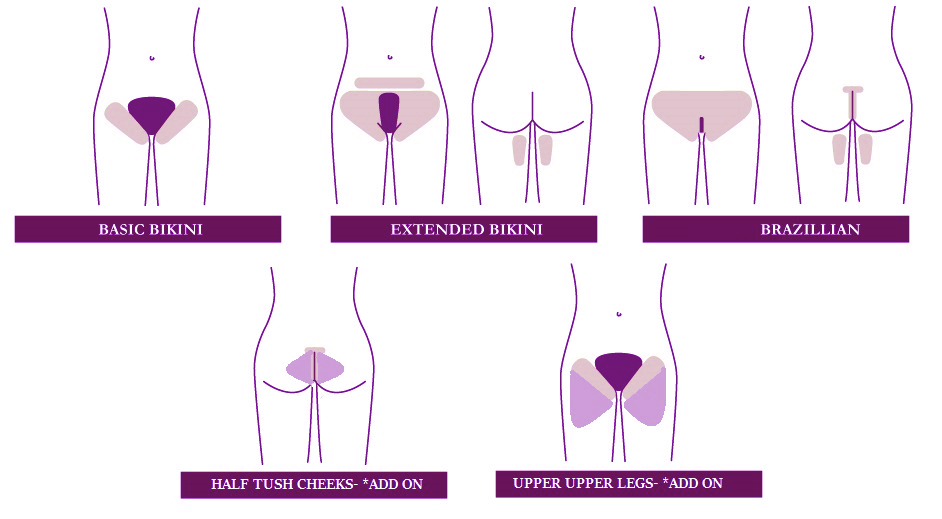

Waxing/Sugaring Questions
Who will be Waxing/Sugaring me?
A thoroughly trained & Licensed Esthetician. Our Estheticians specialize in Brazilian Waxing.
What is a Bikini Wax?
The Bikini Wax removes hair that would be showing outside of your bathing suit or underwear.
What is a Betweenie Wax?
A Betweenine is a bikini wax but but farther in on the sides and more off the top. This does not include the labia or between the cheeks.
What is a Brazilian Wax?
A Brazilian Wax removes all the hair from underneath the belly button continuing to the backside. Some people choose to leave a strip or a triangle on the top.

Do you Wax Men?
Yes, we offer full body male waxing service but do not offer sugaring for men at the moment.
How long of hair should I have?
Your hair needs to be at least a 1/4 inch to a 1/2 inch long in order to be waxed. This is usually about 2 weeks of hair growth after shaving.
Will my Brazilian hurt?
After just one wax session your regrowth will be much thinner, finer and softer. That is one of the major benefits of waxing/sugaring over shaving. With continued waxing, you may experience a significant reduction in regrowth. This makes treatments easier and less painful when you keep up with regular waxes. Avoid caffeine and alcohol for 24 hours before your wax. Take a mild anti-inflammatory medication (like Ibuprofen) an hour before your appointment. Most people find waxing to be very tolerable.
Are there any age restrictions?
You must be 18 years of age or have parental approval/signature to be a client at reWAXation.
Can I get waxed while I'm on my period?
You can still get waxed while you are on your period as long as you wear a tampon.
How long will I stay red?
The skin may stay red and tender anywhere from 1 to 24 hours depending on your skin's sensitivity. reWAXation uses hard wax for more sensitive areas, therefore some people will experience very little redness and irritation.
What about Ingrown Hairs?
EXFOLIATE, EXFOLIATE, EXFOLIATE! We advise all individuals who receive body waxing to exfoliate. If you have any questions please ask your therapist during your appointment.
I’m Pregnant can I get waxed?
Brazilian Waxing during your pregnancy is perfectly normal and not harmful to you or your baby at all. We are highly experienced with waxing moms-to-be. Your skin may be a little more sensitive during this special time. We suggest asking your Dr. for any other concerns.
Is waxing Sanitary?
We have a very strict “No Double Dipping Policy” whether it’s your Bikini, Eyebrow or Leg wax. We WILL NEVER reuse our wax sticks. This prevents the spread of harmful bacteria and diseases.
How long will my appointment be?
Brazilians (women) will take no longer than 30 minutes. We are highly experienced in speed waxing. Full Legs, Backs and Chest should take at the most 30 minutes as well.
What should I do to prepare for my wax?
It is always helpful to exfoliate and take a mild anti-inflammatory medication (like ibuprofen) before a wax service. This will help to reduce skin redness and swelling. Also, avoid caffeine and alcohol 24 hours before your waxing service, they are stimulants and they only increase your blood flow and make the experience more nerve wrecking. Waxing is a very personal service but you are in good hands! Our licensed Estheticians are very experienced, friendly and professional. They will guide you through the process and make you feel comfortable and happy.
What is sugaring?
Sugaring is an ancient Middle Eastern hair removal process that uses a natural paste – made of sugar, water, and lemon juice – to remove the hair follicle from the root, making it the oldest, most natural form of hair removal. It contains no chemicals and because it is a blend of natural ingredients, it eliminates the possibility of any harmful side effects. Sugaring is gentle on the skin: the luke-warm (never hot) Sugar Paste adheres to the hair and the water in the mixture hydrates the follicle and only removes the hair, it does not stick to the skin or live skin cells. Unlike waxing, the Sugar Paste is removed in the same direction of the hair growth. Sugaring is suitable for all skin types and may even improve eczema and psoriasis by removing the top layer of dead skin and encouraging healing of the skin underneath.
There are several other benefits to Sugaring, including:
-Eliminating ingrown hairs and preventing new ones
-Extracting all hair colors and textures
-Gentle on skin allowing for reapplication for missed hairs
-Improved skin tone and texture
-Water soluble for an easy clean up